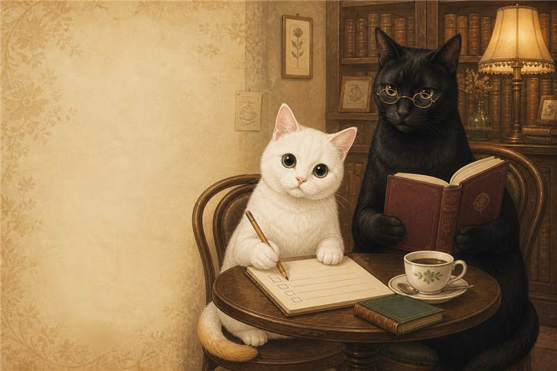

経営の中心傾向
何を優先して決めやすいかを、ひとつに決めつけずに見ます。
答えは、いつもの仕事の中にある。
100通りの仕事場面から、毎回20問。最後に今の困りごとを5問だけ確認します。
答えは「はい・どちらでもない・いいえ」。上位3つの傾向、力が生きる場面、つまずきやすい場面、今週の一手まで読み解きます。

この診断で分かること
何を優先して決めやすいかを、ひとつに決めつけずに見ます。
「能力の点数」ではなく、今回の回答で強く出た選び方を図で表示します。
いまの困りごとを別に確認し、取り組める行動を一つ提案します。
もう一つの入口
事業計画を連載物語へ変え、お客様が続きを待ち、店や商品へつながる接点を育てる「事業計画小説」。診断を受けなくても、実際の計画と物語の対応例を見られます。
結果に表示する名前と、今の会社のことを少しだけ。
はじめる前に
いつもの自分に近い方で大丈夫。
タイプとは別に、いま起きていることを5つだけ確認します。
さんの、今回の回答から見た
あなたらしさは、組み合わせに出る
回答の見取り図
50点が中間です。能力の優劣ではなく、今回どの考え方を優先したかを表しています。
歴史でたとえるなら
性格が同じという意味ではなく、経営の戦い方をたとえています。
力が生きる場面
強く出すぎると
あなたの取扱説明書
あなたの近くに置く3人
いまの状態
今回の回答とは別に、事業の状況から
計画を飾るためではありません。事実を土台に登場人物と出来事を設計し、続きを待つ読者と、店・商品・活動の接点を育てる方法です。
実例と仕組みを見る →無料公開の物語を読むいまは、ここから